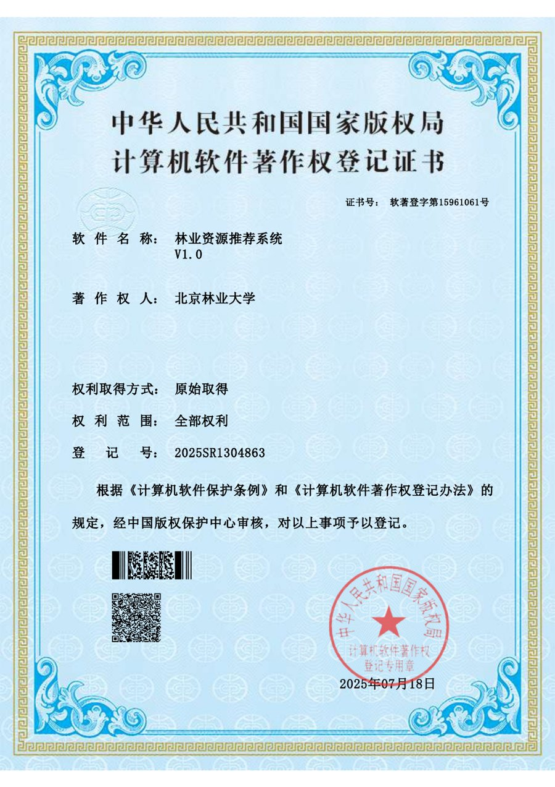

03 · RESEARCH CAMP · 科研成果
软著和专利
研究生课题的两项成果：一项已经登记的软件著作权，一项已通过初审的发明专利申请。两项都围绕同一套系统：用知识图谱整合林业资源知识，再结合大模型做查询和推荐。
1 · 软件著作权 SOFTWARE COPYRIGHT

林业资源推荐系统 V1.0
- 证书号：软著登字第 15961061 号
- 登记号：2025SR1304863
- 著作权人：北京林业大学
- 登记日期：2025 年 7 月 18 日
2 · 发明专利申请 PATENT
林业资源智能推荐系统 · 已通过初审
解决的问题：现有林业资源管理系统难以整合多源异构数据，知识图谱不够精准，查询结果不准确。
- 数据层：把结构化和非结构化数据统一成规范文本，抽取实体、属性和关系三元组，分层构建并融合成林业资源知识图谱，存进图数据库。
- 查询时先在图谱里查；查不到，再由服务层从缓存里找历史答案，或调用大模型生成补充答案。
- 用林业领域语料对大模型做领域适配，让实体和属性抽取更准。


专利尚在审查中，这里只展示附图和简介。